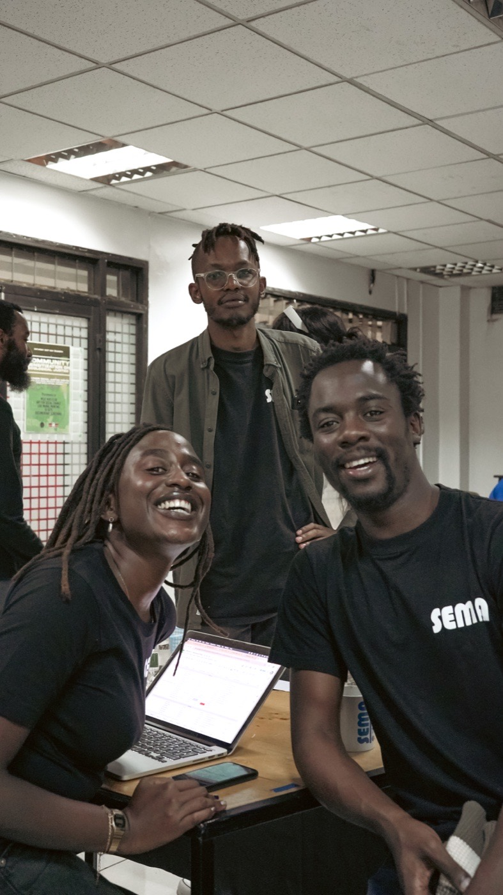
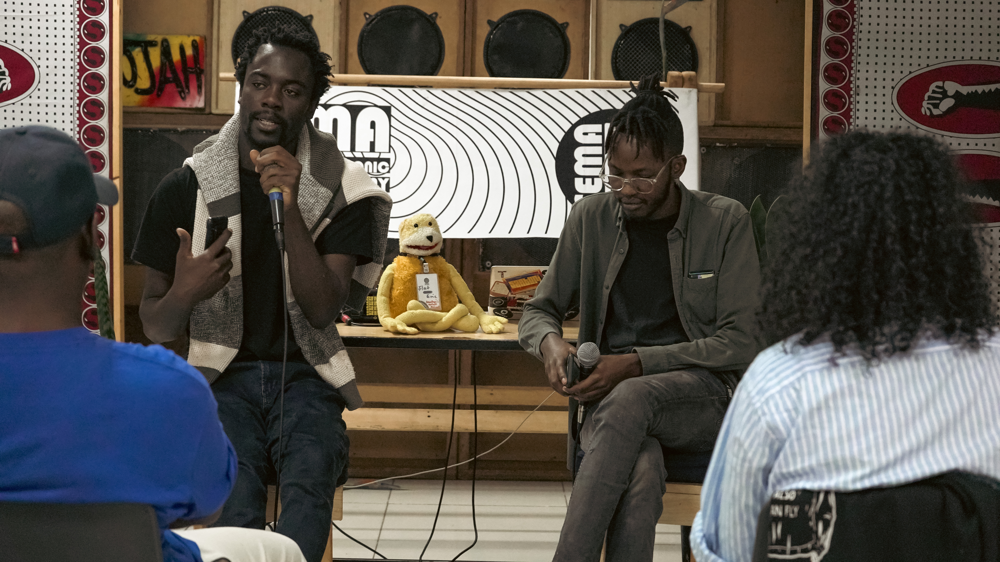

About
Kimina
I’m a music producer, audio engineer and creative technologist with a background spanning music education, live production, experimental sound, instrument building and digital systems. My work combines hands-on creativity with technical expertise—from recording, synthesis, field recordings and SuperCollider to developing unusual interfaces and supporting artists with their wider creative projects. Through my studio, I offer production tutoring, recording, workshops and tailored creative sessions in a relaxed, collaborative environment where ideas can be explored, developed and brought to life.
Selected moments
In practice
